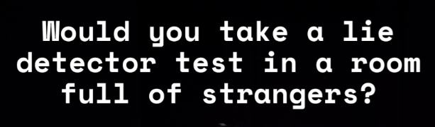

░▒▓███████▓▒░░▒▓██████▓▒░░▒▓██████████████▓▒░░▒▓████████▓▒░▒▓████████▓▒░▒▓██████▓▒░
░▒▓█▓▒░ ░▒▓█▓▒░░▒▓█▓▒░▒▓█▓▒░░▒▓█▓▒░░▒▓█▓▒░▒▓█▓▒░░▒▓█▓▒░▒▓█▓▒░ ░▒▓█▓▒░░▒▓█▓▒░
░▒▓█▓▒░ ░▒▓█▓▒░░▒▓█▓▒░▒▓█▓▒░░▒▓█▓▒░░▒▓█▓▒░▒▓█▓▒░░▒▓█▓▒░▒▓█▓▒░ ░▒▓█▓▒░
░▒▓██████▓▒░░▒▓████████▓▒░▒▓█▓▒░░▒▓█▓▒░░▒▓█▓▒░▒▓█▓▒░░▒▓█▓▒░▒▓██████▓▒░░▒▓█▓▒░
░▒▓█▓▒░▒▓█▓▒░░▒▓█▓▒░▒▓█▓▒░░▒▓█▓▒░░▒▓█▓▒░▒▓█▓▒░░▒▓█▓▒░▒▓█▓▒░ ░▒▓█▓▒░
░▒▓█▓▒░▒▓█▓▒░░▒▓█▓▒░▒▓█▓▒░░▒▓█▓▒░░▒▓█▓▒░▒▓█▓▒░░▒▓█▓▒░▒▓█▓▒░ ░▒▓█▓▒░░▒▓█▓▒░
░▒▓███████▓▒░░▒▓█▓▒░░▒▓█▓▒░▒▓█▓▒░░▒▓█▓▒░░▒▓█▓▒░▒▓████████▓▒░▒▓█▓▒░ ░▒▓██████▓▒░
Truthmachine
By CounterPilot
This was the last show I saw at the Fringe. I was flyered in the street; handed a minimalist flyer which, on the front, read only:

The answer, at the time, was probably not, especially not if I planned on making my train, which departed in the hour. On much convincing from the flyerer, I bought a ticket to a small venue tucked into a corner of a Quaker Friends' Meeting House. I'm glad I did.
★★★★
So? What Happened?
The three other (semi-)willing participants and I were ushered into this rectangular dark room. The central conference table was set up with 8 seats on each side, facing a triangular console which would not look out of place as the control system for a 70s hi-fi, complete with wood trim and flashing LEDs.
The polite man who led us to the room with a smile on his face was Nathan Sibthorpe, Counterpilot Artistic Director, who would be sat behind a laptop orchestrating the 30 minute experience. As his recorded voice directed us to a pair of headphones, we were warned about the imminent arrival of our Interrogator. After a few ice-breaker questions asked and revealed to all through a bright light in front of each console, the important check for consent to be interviewed in depth in front of the audience was made. Three out of the four consoles lit up green. As much as I enjoyed learning that three of the four of us had knowingly failed to recycle a piece of recyclable packaging in the last 24 hours, this is where the real meat of the experience was.
The Interrogator, played by Emily Carr, brought a sudden stern presence into the room, despite a wry smile of amusement. Her performance, alongside the soviet stylings of the console and small booklet styled after a classified dossier in front of each participant brought a cold-war seriousness to the proceedings. Though tropey, the stakes created by the active and already somewhat probing audience participation helped avoid the heightened scene from becoming absurd.
Hooked Up to the Machine
Sibthorpe selected a participant from one of those who had given consent during the series of icebreakers (whether at random or to make a good show, I can't tell). In my showing, I was chosen. A quick whispered briefing from Carr, and I was stood at the end of the table, while more recorded messages led the rest of the audience to flip through their dossiers. Sensors for heart-rate, skin conductivity and respiration were attached deftly to me, and I was seated by a large microphone. Audio cues began, indicating those biometrics, and a short explanation then revealed the responses that might betray me as I faced Carr's stare.
Scary Questions
The Interrogator sat back at the opposite end of the table, and worked their way through some quickfire yes or no questions, starting easier and crescendoing to full discomfort by pressing on embarrassing answers, reaching a climax of "Would you fuck me?". The questions were designed to shock; which is good, because the answers hardly did. It seems so easy when the truth is revealed instantly, to simply say "yes" or "no", and in almost all cases, I'm not sure it mattered which, because the audience, and the cast, simply accepted them as the truth and moved on. Even deep embarrasments, or social taboos about lying, theft and exes, all felt easy to say in front of these strangers, because at its core, we all know that we are hiding bits of themeselves, and it's hardly surprising to hear that others are too.
The next section of the experience allows the audience to select questions from a prepared list, providing respite from Carr's intensity and stare. This helps a little to switch some more interactivity to the audience, who at this point have been witnessing the subject of the test squirm for 10 minutes. With the smaller crowd at my show, they seemed less interested in raising the stakes of the questions, though looking at random strangers who were deliberately finding out embarrassing things about me was a little unnerving.
The final polygraph section had a small prelude about the ease of lying - it encouraged me to lie in at least one of the following questions, some of the more deeply personal, including pressing on earlier mentions of insecurities and love. It's a little difficult to tell how much the experience changed to follow previous threads, but sat in the hot-seat, it certainly felt like there were more about topics in which I had expressed an earlier weakness.
The Instant Stooge
Closing the show, the stated thesis begins to reveal itself - following an expository recording on the unreliability of lie-detector tests (much of which the interviewee does not get to hear), a scripted segment is imposed on the proceedings of what until now was doing a great job of being revelatory on its own. I was asked to repeat some lines which made me appear to confront the interviewer, rejecting the premise of the test and appearing to have been tricking the detector test, perhaps by some of the methods just outlined. Following instructions in my headphones, I lift up a small light which trickles sand onto the table - a natural break in the otherwise clean and simple set up of the production. With what I assume is a striking visual of my face, the "experiment" ends, the interrogator rushes over and unhooks me, whispering something about how I did well, and a reassurance that the show is over.
Production Design
This was, like many others, an immersive experience that lived on the strength of its production. The low lighting and the small, stark, cohesive set of consoles and lamps felt designed to give a darkness which seemed to hide the social indiscretions we were committing by discussing taboos at 16:00, while also being the primary mechanism of interaction.
The tech had no issues, bringing the audience in with the reassuring clunk of a switch to answer the first few ice-breakers, and lighting up microphones to give a personal touch to the parts where the public replaced the interrogator. The polygraph machine, similarly, was installed onto me with a well practiced rhythm, and the audio sonification of the ordinary traces was bleeding edge in this kind of theatre, giving the audience instant feedback which was crucial to mask the awkward silences as I thought about questions, and kept the tension high while Carr pressed on.
Its sleek production masks the inherent weirdness of it all. It seems perfectly natural that this set of mechanisms would be part of some elaborate torture, so some risque questions find themselves quite at home.
Misinformation
As the show's online advertising says, it's trying to "seek out truth in a world of fake news and alternative facts". This framing is a little at odds with the experience, which is far more deeply about vulnerability and (for me) the worries of revealing the truth to strangers. The most important parts of it felt like they were flirting with the little lies of everyday life; saying things that we all know but are afraid to say for one reason or another. From banalities like recycling, to the presence of deception in romantic relationships, the cast deftly escort a smaller audience through the little truths that society has assigned some edge to.
While I'm not sure the misinformation lens landed to me, I definitely learnt something about the truth. In its most personal parts, it felt more like therapy than theatre, but in the end, I don't think the audience learnt anything more consequential about me than whether I had stolen from a self checkout.
Accessibility and Safety
A reliance on red-green colour for the audience response system might take a little away from the experience for those with colour blindness, and as is often the case with interactive, the sound has been so well designed that it would be difficult to capture the intensity, especially of the biological response of the interviewee to questioning without this.
The interviewee is given the chance to pass questions and is given a safeword; "that's all I've got" will end the show, though the topics don't delve too far into much content that would be triggering, perhaps relationships being a small exception.
Heartbeat for One
Being the only interviewee in my show gives me a different perspective, but being trapped at the end of the table, in anticipation of further questions asking me to reveal something more to small crowd (this made it more anxiety inducing!) was the most intense theatre experience I've had. It's a show about why the truth makes us feel so uncomfortable, and I can confirm it really does, leading to an adrenaline fueled ecstatic relief as you are unhooked. It was brilliant and incisive, though I wonder if the scripted ending was needed to push that point. Being the stooge felt like a betrayal of the rawness of the rest of the show, but I can see how it would bring home the theme for those not in the hot seat.
A focused exploration that pushes the audience to reveal the ideas themselves, and a thrill ride about vulnerability to boot; Truthmachine is good immersive theatre.
- Sam Hutton